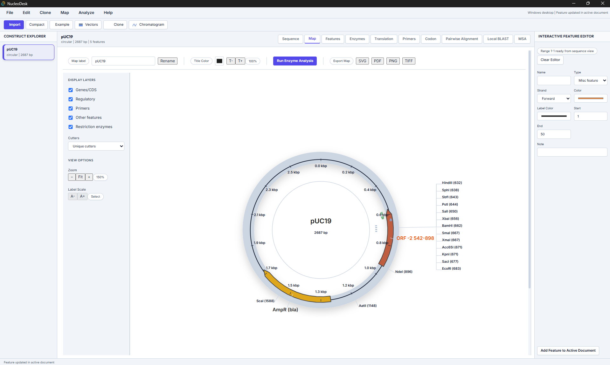
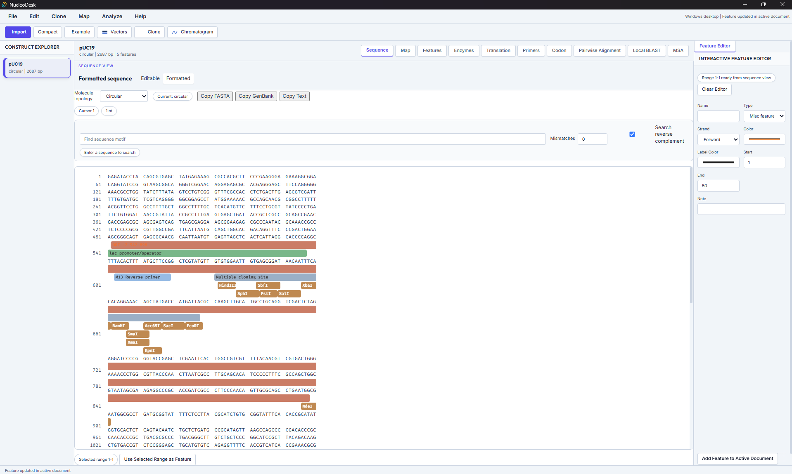
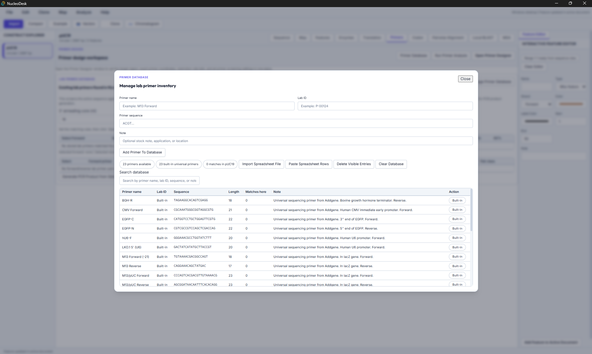
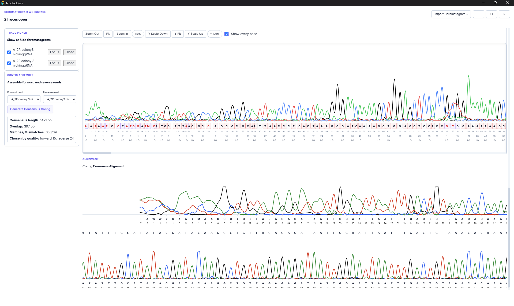
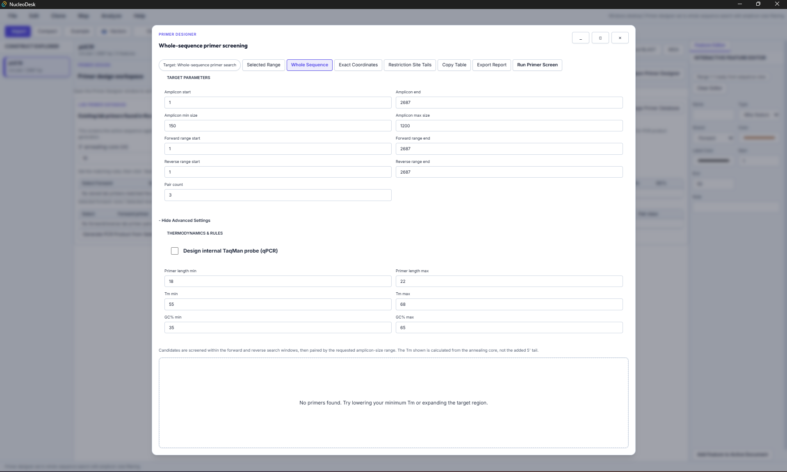
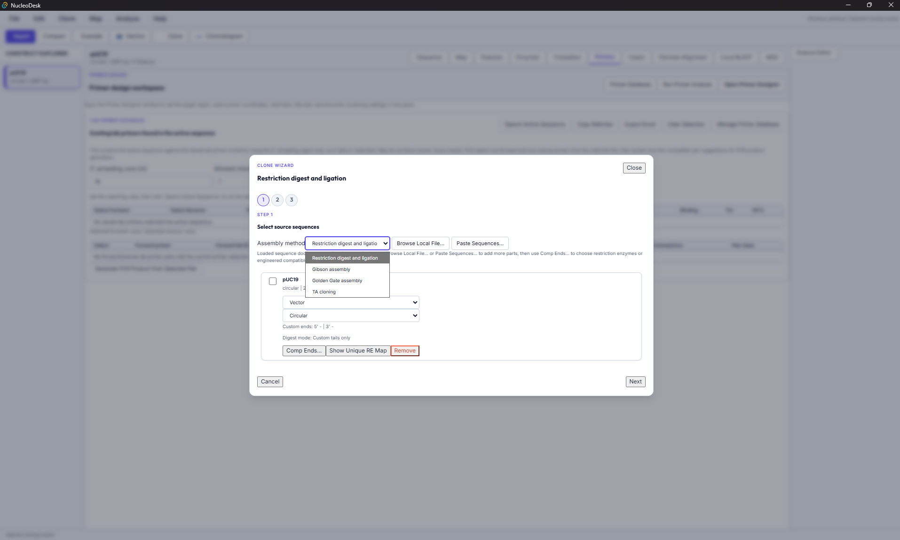
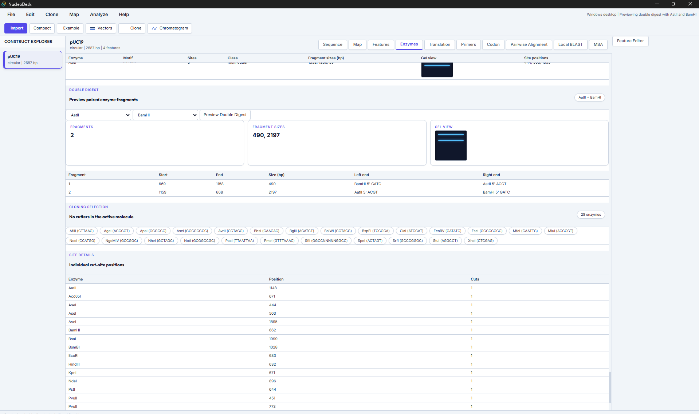

NucleoDesk Gallery
Explore the features and interface of NucleoDesk, your comprehensive tool for DNA sequence analysis and molecular biology workflows.

Plasmid Visualization
Beautiful, interactive circular and linear plasmid maps with customizable feature annotations.

Sequence Workspace
A clean and intuitive workspace for managing and analyzing your DNA sequences efficiently.

Lab Primer Database
A comprehensive database to manage and organize your laboratory primers for quick access.

Chromatogram Review
Review Sanger sequencing results directly within the app, featuring contig assembly and visual verification.

Primer Design
Integrated primer design and analysis to ensure specific and successful amplifications.

Cloning Simulation
In-silico cloning tools to verify constructs before heading to the wet lab.

Restriction Digest Analysis
Advanced restriction enzyme mapping to plan your cloning strategies with precision.